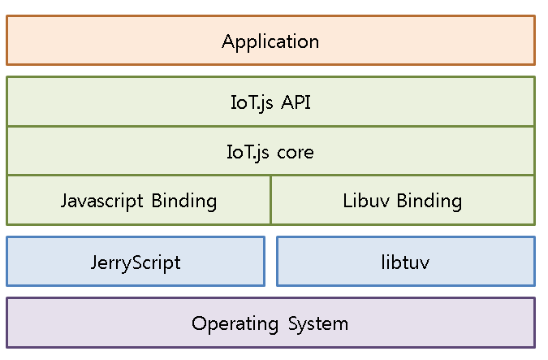

Introduction to IoT.js & JerryScript
Chunseok Lee @ Samsung Electronics
IoT.js & JerryScript


IoT.js : Node.js-compatible platform for IoT devices
JerryScript : JavaScript engine for IoT devices
Dev History
| 2014 Mar ~ | JerryScript |
| 2015 Jan ~ | IoT.js |
| 2015 Jun ~ | Open on Github |
Dev Team
Samsung + Szeged Univ.
KOR + RUS + UK + GER + HUN
Please Fork Me on Github
Why JavaScript/Node.js
in constrained devices ?
Web
Most Succuessful Ecosystem in history
JavaScript
Most Popular Language
from https://redmonk.com/sogrady/2015/01/14/language-rankings-1-15/
Node.js
Most Popular JS Platform
- Well-known Progamming Model
- Strong ecosystem and package management system
Q. V8/Node.js on IoT devices?

| Node.js | 11MB flash | 2MB RAM |
| V8 | 5MB flash | 2MB RAM |
JerryScript
JavaScript engine for IoT devices
Design Principle:
Low Memory
Pure Interpreter(no JIT)
Compact Object Representation
no AST construction during parsing
Status
- Embedding API (in progress, partially supported)
- ECMAScript 5.1 Compliant : Test262 pass rate 98.5%
- Startup heap size : 2KB(x64 linux)
- bytecode snapshot support
- Low dependency on platform : own libc library
- Linux, NuttX(RTOS), OSX
Target Segment
Embedding API(1)
Execute JavaScript from your application
#include "jerry.h"
int
main (int argc, char * argv[]) {
char script [] = "print ('Hello, World!');";
jerry_completion_code_t code = jerry_run_simple (script,
strlen (script),
JERRY_FLAG_EMPTY);
}
Embedding API(2)
Interaction with JavaScript environment
#include "jerry.h"
int
main (int argc, char * argv[]) {
char str [] = "Hello, World!";
char var_name [] = "s";
char script [] = "print (s);";
// Initializing JavaScript environment
jerry_init (JERRY_FLAG_EMPTY);
// Getting pointer to the Global object
jerry_api_object_t *obj_p = jerry_api_get_global_object ();
// Constructing string
jerry_api_string_t *str_val_p = jerry_api_create_string (str);
// Constructing string value descriptor
jerry_api_value_t val;
val.type = JERRY_API_DATA_TYPE_STRING;
val.string_p = str_val_p;
// Setting the string value to field of the Global object
jerry_api_set_object_field_value (obj_p, var_name, &val);
// Releasing string value, as it is no longer necessary outside of engine
jerry_api_release_string (str_val_p);
// Same for pointer to the Global object
jerry_api_release_object (obj_p);
jerry_api_value_t eval_ret;
// Now starting script that would output value of just initialized field
jerry_api_eval (script, strlen (script),
false, false, &eval_ret);
jerry_api_release_value (&eval_ret);
// Freeing engine
jerry_cleanup ();
}
Small Memory Footprint
JerryScript/Duktape/V8
*duktape : "embeddable Javascript engine, with a focus on portability and compact footprint"
Benchmark: SunSpider
Benchmark: ubench
IoT.js
Node.js-compatible platform for IoT devices
Goal of IoT.js
Small memory consumption
Backward compatibility to Node.js app : API, (package)
IoT.js Architecture
Snapshot on IoT.js
JS heap available on STM32F4 : 78KB
Running http server on IoT.js requires 128KB JS heap
Sol: AOT bytecode construction for iot.js JS modules
Status:
memory consumption
JS heap consumption
| IoT.js | Node.js | ||
| require(http) | 49k bytes | 2.1M | |
| require(http+gpio) | 54k bytes | - | |
| http server + require(gpio) | 71k bytes | 2.4M bytes | |
| http server with 1.7k response | 76k bytes | 3.1M bytes | |
| JS heap size | 77k(STM32F4) | - |
Reference Hardware
STM32F4 discovery board
Cortex-M4F core, 128kb RAM+64kb CCM, 1M flash
Demo
JS execution via Web Browser
http server is running on STM32F4
Demo(code)
server JS code
var http = require('http');
var server = http.createServer(function(req, res) {
var data = '';
if (req.url == '/') {
res.writeHead(200, { 'Connection' : 'close',
'Content-Length' : htmldata.length
});
res.end(htmldata);
}
if (req.method == 'POST') {
req.on('data', function(chunk) {
console.log('data:'+chunk);
data = data + chunk;
});
req.on('end', function() {
var result = eval(data);
data =null;
res.end(result);
});
}
});
Demo(Video)
JS execution via Web Browser
Future Work
Smaller memory footprint/binary size
JerryScript Embedding API Enhanchment
IoT.js package management system
Support more devices
By Your Participation
Please Fork Me on Github
https://github.com/Samsung/iotjs
https://github.com/Samsung/jerryscript